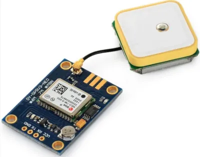
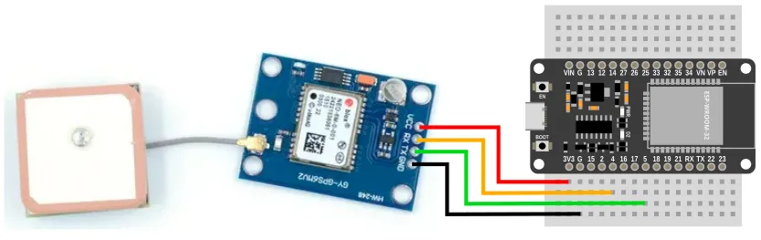
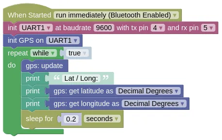
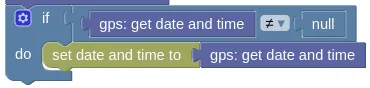

GPS (NMEA over serial)

Most GPS modules returns NMEA data over a serial line. This extension reads and parse the data from the GPS module to provide you with useful data (eg. latitude, longitude, time).
Pins
Depending on your GPS model, the pin order will be different, but most should have the following pins:
| Pin | Description |
|---|---|
| VCC | Power for the sensor. Connect to 3V3. If your device is on USB power, you can also use VIN. |
| GND | Ground pin. This should be connected to the GND pin on the ESP32. |
| TX | Data transmit. This should be connected to the UART RX pin on the ESP32 (default is Pin 5). |
| RX | Data receive. This should be connected to the UART TX pin on the ESP32 (default is Pin 4). |
Note that TX on the GPS is connected to RX on the microcontroller, and RX on the GPS is connected to TX on the microcontroller.
Wiring

Code
This code will print out the latitude and longitude.
The update is required to read from the GPS, and needs to run frequently.
Here we introduce a 0.2s sleep to prevent printing too often to the monitor; if you don't need to print to monitor, you should run without any sleep.
Blocks

If your GPS is using a different baudrate, you will need to change the 9600.
If you wired your RX / TX to a different pair of pins, you'll need to change the pins in the init UART block.
Python
import machine
import gps
import time
# Modify the next line if your baudrate and pins are different
uart1 = machine.UART(1, baudrate=9600, tx=4, rx=5)
gps_device = gps.GPS(uart1)
while True:
gps_device.update()
print('Lat / Long:', gps_device.get_lat(), gps_device.get_lng())
time.sleep(0.2)
Results
It can take a few minutes for the GPS to retrieve its latitude / longitude.
You will also need a clear view of the sky for it to work.
Until then, you will see Lat / Long followed by None printed in the monitor.
When the GPS obtains its position, you should start seeing the latitude and longitude printed in the monitor.
class GPS - read NMEA compatible GPS units
Constructors
gps.GPS(uart)
Creates a GPS object.
The arguments are:
uartA UART object.
Returns a GPS object.
Methods
GPS.update()
Reads data from the GPS. You must run this frequently.
Returns True if it managed to read a message from the GPS, else it'll return False.
You can usually ignore this, but it may be useful for troubleshooting.
GPS.get_lat_ddm() / GPS.get_lng_ddm()
Get the latitude or longitude in DDM (Degree, Decimal Minute) format.
You must run update() frequently for this to return valid data.
Examples:
- 1.5 degrees North will return
[1, 30, b'N'] - 2.75 degrees South will return
[2, 45, b'S']
Returns None if GPS data isn't available yet, else a tuple containing 3 items degree, minute, dir:
-
degreeAn integer representing the degrees part of the latitude or longitude. -
minuteA float representing the minutes part of the latitude or longitude. -
dirA bytes representing 'N', 'S', 'E', 'W'.
GPS.get_lat() / GPS.get_lng()
Get the latitude or longitude in DD (Decimal Degree) format.
You must run update() frequently for this to return valid data.
Examples:
- 1.5 degrees North will return
1.5 - 2.75 degrees South will return
-2.75
Returns None if GPS data isn't available yet, else a float representing the latitude / longitude.
GPS.get_alt()
Gets the altitude above mean sea level.
You must run update() frequently for this to return valid data.
Returns None if GPS data isn't available yet, else a float representing the altitude in meters.
GPS.get_time()
Gets the current UTC time (GMT +0). You'll need to perform your own conversion if you require local time.
You must run update() frequently for this to return valid data.
Returns None if GPS data isn't available yet, else a tuple containing 3 items hours, minutes, seconds:
-
hoursAn integer representing the hour. -
minutesAn integer representing the minute. -
secondsA float representing the seconds.
GPS.get_date()
Gets the current UTC date (GMT +0). You'll need to perform your own conversion if you require local date.
You must run update() frequently for this to return valid data.
Returns None if GPS data isn't available yet, else a tuple containing 3 items day, month, year:
-
dayAn integer representing the day. -
monthAn integer representing the month. -
yearAn integer representing the year (eg. 2024).
GPS.get_datetime()
Gets the current UTC date and time in a format that's compatible with the set date and time to block or the Python machine.RTC().datetime().
When setting date and time, you can add/subtract to the hours/minutes to convert to local time. This works even if the addition/subtraction results in an otherwise invalid time (eg. 27 hours and 70 minutes).
You must run update() frequently for this to return valid data.
Sample code:

if gps_device.get_datetime() != None:
machine.RTC().datetime(gps_device.get_datetime())
Returns None if GPS data isn't available yet, else a tuple containing 8 items year, month, day, weekday, hours, minutes, seconds, subseconds:
-
yearAn integer representing the year (eg. 2024). -
monthAn integer representing the month. -
dayAn integer representing the day. -
weekdayThis is always0. -
hoursAn integer representing the hour. -
minutesAn integer representing the minute. -
secondsAn integer representing the seconds. -
subsecondsThis is always0.
GPS.get_sog()
Gets the Speed Over Ground.
You must run update() frequently for this to return valid data.
Returns None if GPS data isn't available yet, else a float representing the speed in meters per second.
GPS.get_cog()
Gets the Course Over Ground.
You must run update() frequently for this to return valid data.
Returns None if GPS data isn't available yet, else a float representing the course in degrees.